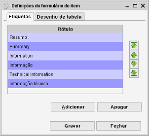
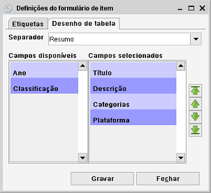

Definições do formulário de item
Caminho de menu: Definições > Definições do formulário de item
Este diálogo permite-lhe gerir os separadores mostrados no Formulário de item.
Por predefinição, para a maioria dos módulos, há dois separadores: Informação e
Informação técnica.
Separadores

Adicionar um separador
Aqui pode definir novos separadores ou apagar existentes. Para criar um novo clique em Adicionar. Vai abrir um formulário de item
onde pode definir o nome e um ícone para o novo separador.
Clique em Gravar para tornar o separador disponível.
Remover um separador
Selecione o separador que quer remover na tabela de separadores e clique em Apagar.
Definir a ordem dos separadores
Pode alterar a ordem dos separadores de acordo com as suas necessidades. Clique num separador na tabela e use as setas verdes à direita
na janela para o mover para cima, para baixo, para o início ou para o fim da lista. Clique em Gravar para aplicar
as alterações.
Desenho de tabela

Os separadores têm de ter campos atribuídos para poderem funcionar corretamente. Na lista pendente ao cimo da janela, selecione
o separador que quer editar. Por baixo, à esquerda estão os campos disponíveis e à direita os campos atualmente
usados.
Os campos disponíveis podem ser adicionados ao separador, os outros já lhe estão atribuídos.
Faça clique nos campos para os mudar de lado na janela.
Nota: caso não haja campos disponíveis no lado esquerdo, terá primeiro de os remover de algum dos separadores
na lista pendente.
Ordem dos campos
Clique num campo na tabela e use as setas verdes à direita
na janela para o mover para cima, para baixo, para o início ou para o fim da lista. Clique em Gravar para aplicar
as alterações.